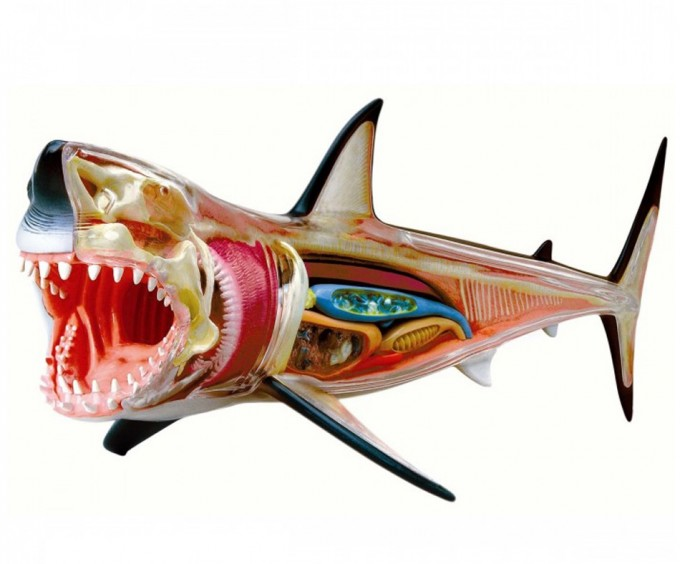
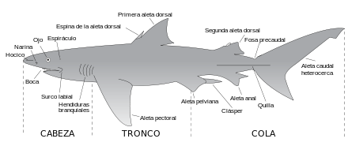

La Anatomía del Tiburón
Los tiburones son condrictios peces cartilaginosos es decir, su esqueleto está hecho de cartílago en vez de hueso.
La piel de los tiburones está formada por una especie de escamas conocidas como dentículos dérmicos. Otra función de esta piel tan específica es la de actuar como un silenciador, ya que el agua se distribuye hacia dentro de las hendiduras y no hacia afuera, limitando la fricción contra el agua, mejorando la movilidad y velocidad y, además, haciendo que el desplazamiento sea mucho más silencioso.
Los tiburones presentan de cinco a siete pares de branquias, normalmente localizadas a los lados de la cabeza.
El hígado es bilobulado, y representa hasta el 30% del peso corporal.